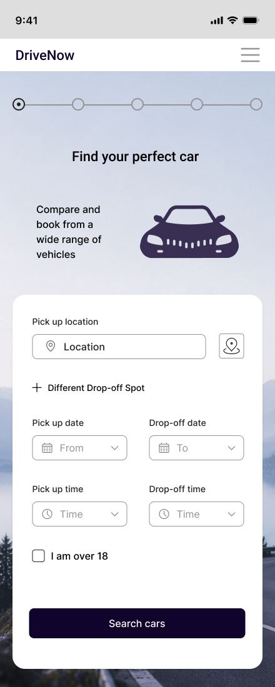
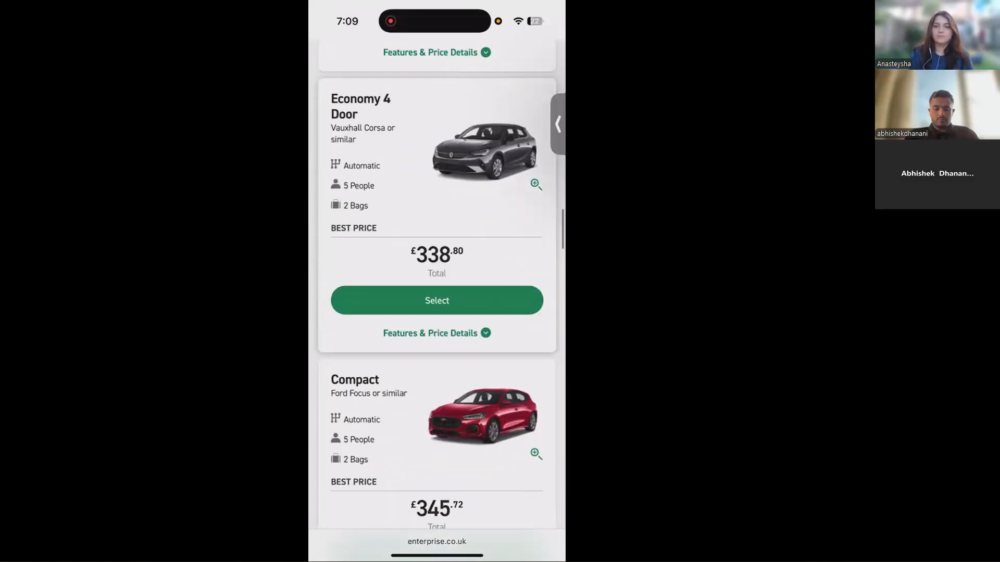
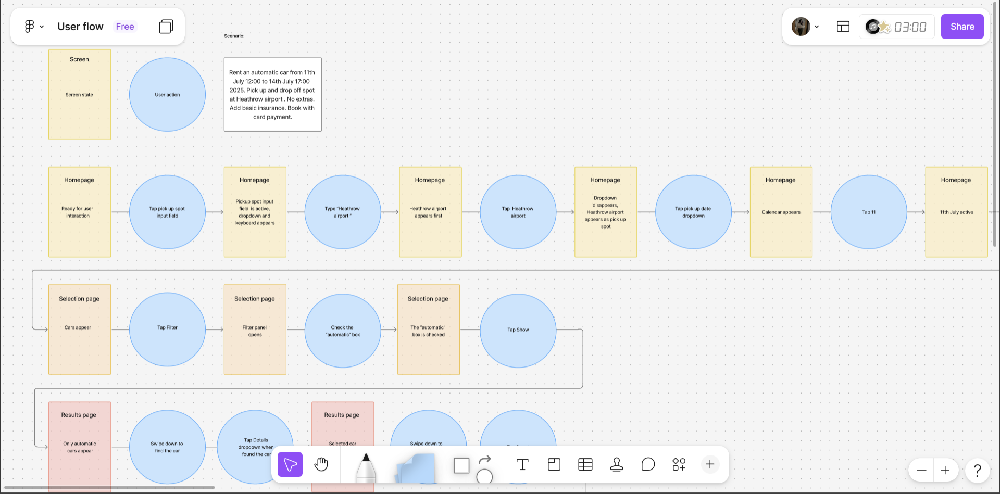
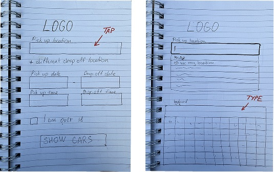
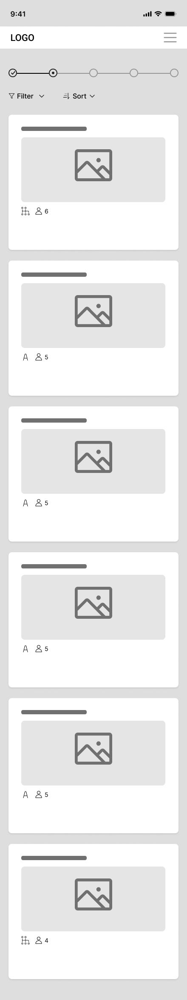
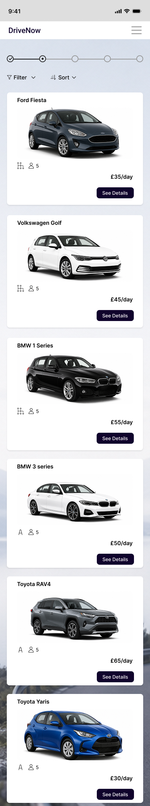
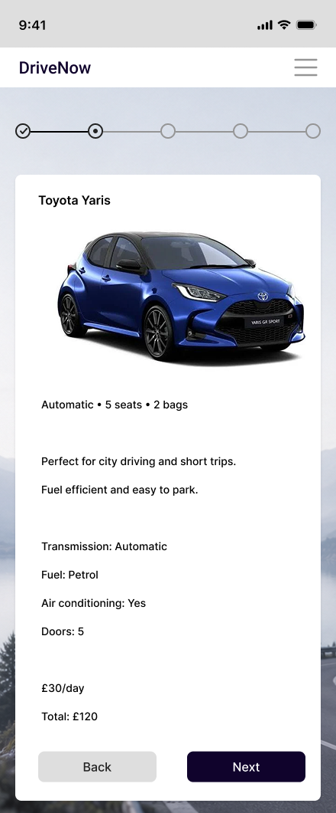
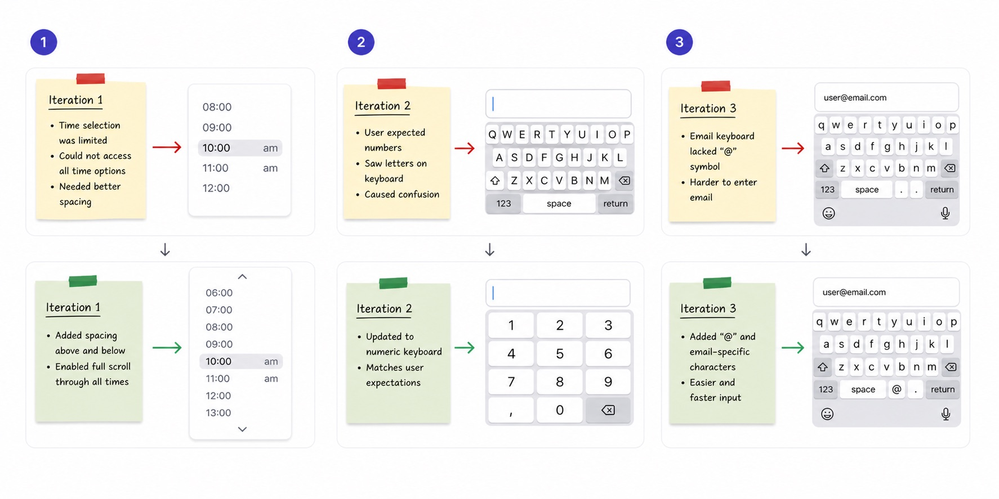

Case 01
DriveNow
Redesigning a complex car rental booking flow to reduce friction and help users decide faster.
Now

Summary
Problem
Users found booking a car confusing and slow. Location, dates and times were hard to scan, and too many steps created friction from the very first screen.
Solution
A clearer, structured booking flow: related information grouped together, simplified inputs and labels, and supporting icons for faster completion.
Outcome
Less to think about on the first screen. A second round of usability testing confirmed it, and led to a few small fixes.
My process
This was my diploma project at UX Design Institute. I took it through the full UX cycle, from studying the audience and competitor sites to testing a working prototype and fixing what came up.
Research & usability testing
I started by looking at the target audience and existing car rental sites, then ran exploratory usability tests with interviews to understand common booking frustrations.
Key findings
- Users focused on finding a suitable car but were distracted by excessive information and optional extras.
- Booking terminology was hard to understand, which slowed decision-making.
- Users preferred a simple layout that highlighted key actions and booking details.
I grouped all observations with affinity mapping, which revealed the main problem areas and guided the design decisions below.

Too much information
- Many options and add-ons increased cognitive load.
- Content was hard to scan quickly.
- The main booking screen felt cluttered.
Simplify & prioritise
- Prioritised essential booking information.
- Removed visual clutter and distractions.
- Reorganised add-ons into clear sections.
Result: people found what they needed faster.
Confusing terminology
- Some labels and booking terms were unclear.
- Technical language slowed decisions.
Plain-language labels
- Replaced technical terms with clear, user-friendly language.
- Made labels consistent across the interface.
Result: users understood the process faster and more confidently.
User flow & journeys
I mapped the journey from car search to checkout to find friction points, unnecessary steps and moments where users felt overwhelmed. A customer journey map added how people felt at each stage and where it went wrong for them.
- Friction showed up early. Choosing location, dates and time on one screen felt like too much.
- Filtering and insurance terminology caused confusion.
- Car selection and add-ons increased cognitive load.
- Users needed clearer structure and prioritised information.

Sketches
Low-fidelity sketches let me quickly explore different ways to structure the main booking screen. I focused on the problems from testing: too much information, a confusing path and actions that were hard to spot.

Wireframes
In Figma, I turned the sketches into wireframes to structure the flow around user behaviour, improve hierarchy and make key actions easy to find.



Try the prototype
The mid-fidelity prototype brings the redesigned flow together. Click through it below, from search to checkout.
Validation & iterations
After iterating on the first insights, I ran a second round of testing to make sure the updated flow was clear. Small interaction details turned out to matter most.
Limited time scrolling
- Users couldn't scroll through all time options, so the selection felt restricted.
Full, accessible scroll
- Added spacing above and below the list.
- Enabled scrolling through every time value.
Result: all times visible and selectable without confusion.
Wrong keyboard types
- Some fields triggered keyboards that didn't match the input.
Context-specific keyboards
- Numeric keyboard for number fields.
- Email keyboard with "@" for email inputs.
Result: faster form completion.

Why it matters
For users
- Easier booking experience
- Less cognitive load
- Clearer terminology
- Faster decision-making
For the business
- Fewer drop-off points in booking
- Higher likelihood of completion
- More user confidence and trust
- Faster path from search to checkout
What I learned
Users had every feature they needed. They struggled because the screens showed too much at once. Plain words and a clear order of information did more for them than any new feature would have.
I also learned to check my decisions with users early. Small things like the time scroll and keyboard types changed how the whole flow felt.
Next steps
- Test with a larger group of participants.
- Find any remaining friction points in the flow.
- Improve car comparison and filtering for faster decisions.
- Measure task completion and user confidence with the new flow.
Next case
TiriVelo →